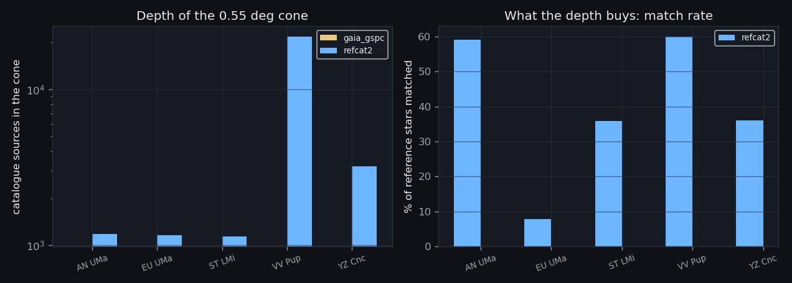
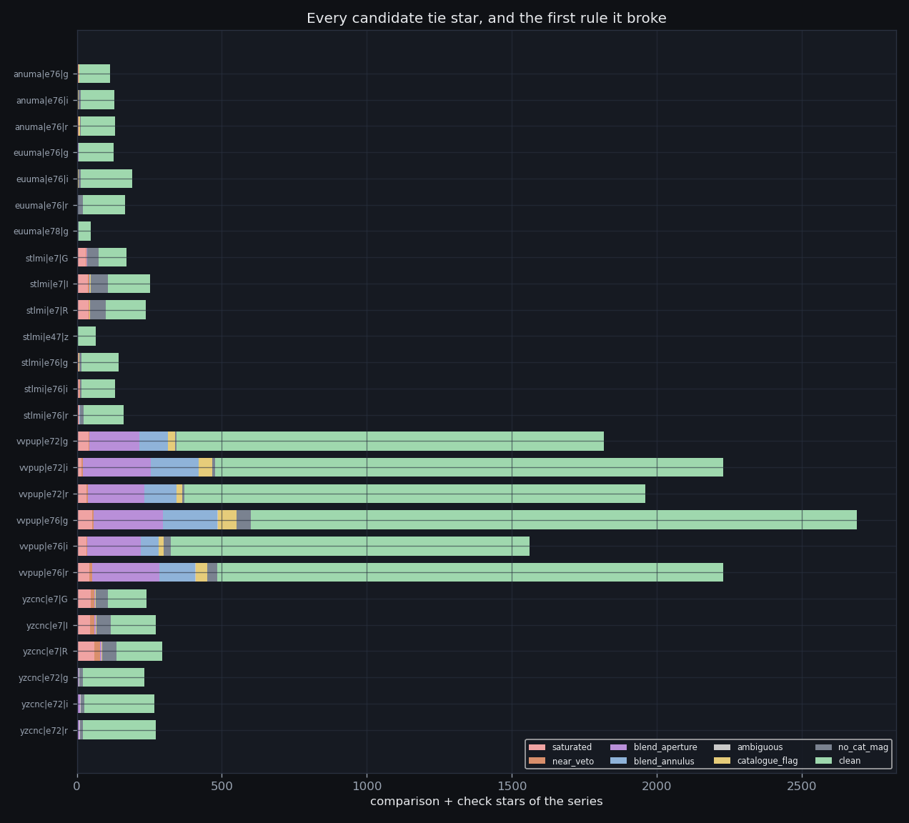
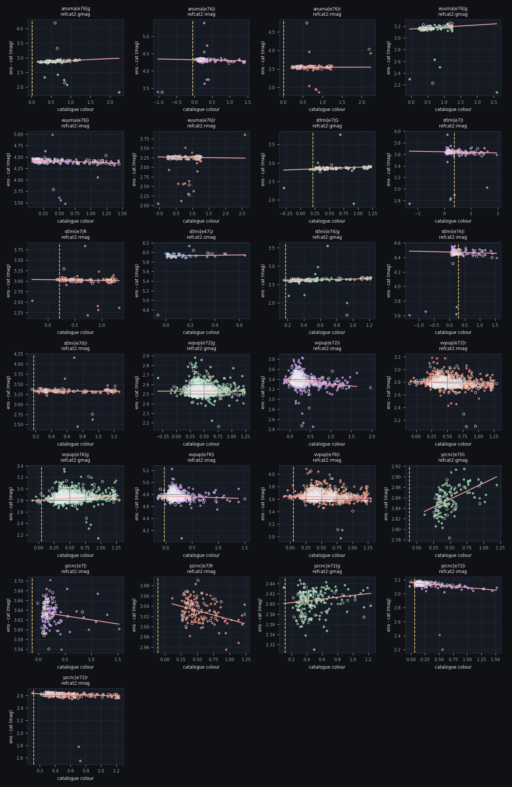
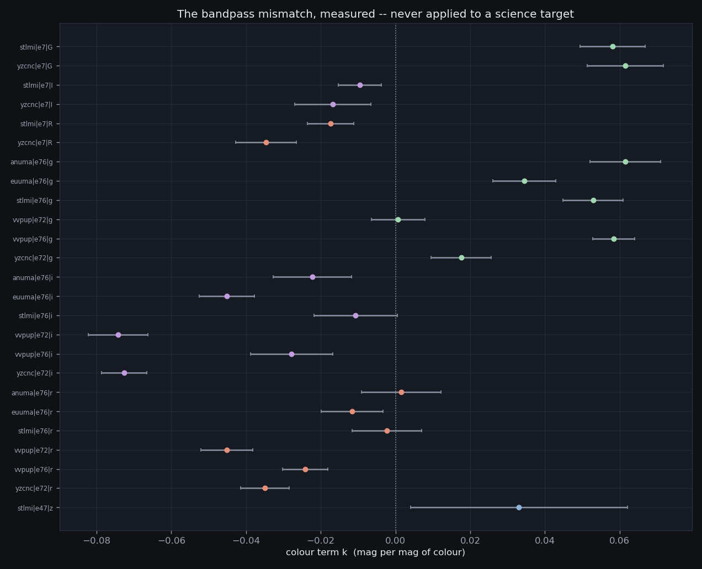
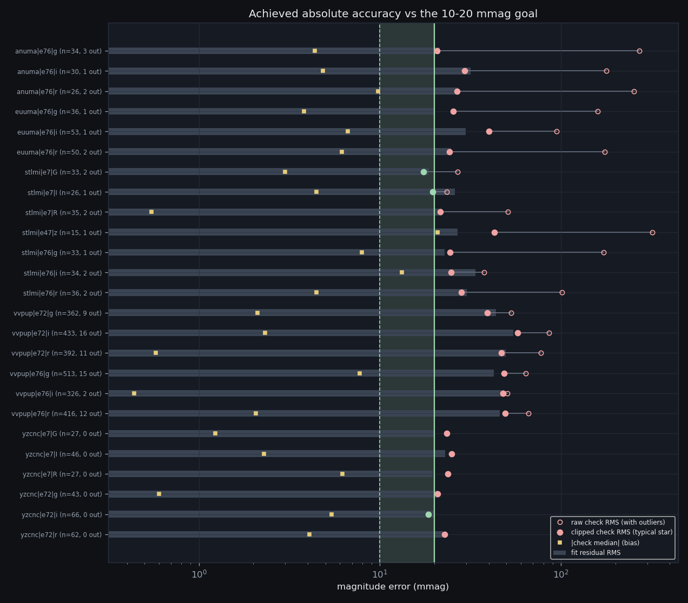
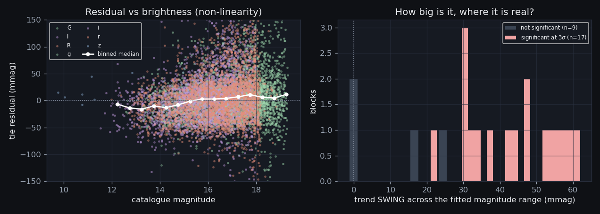
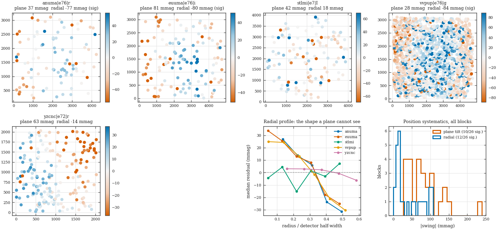

From an arbitrary internal gauge to natural-system magnitudes on a
standard zero point · 25 of 27 solved series tied
· primary catalogue
refcat2 ·
built 2026-08-20T04:06Z
(CV-S6 catalogue tie v1.1 (2026-08-19),
commit 2c897e7-dirty)
· the characterization that
graded this NOT SUPPORTED ·
project hub ·
the front page
The ensemble solver models every measurement as
mij = Mi + ZPj, and that model
is invariant under M → M + c, ZP → ZP
− c. The solver fixes the freedom by demanding
mean(ZP) = 0. That choice is arithmetically convenient and
physically empty: it puts every light curve on a gauge whose origin is
“whatever these particular comparison stars happened to average
to”. 3,174,618 light-curve rows were internally consistent and
externally meaningless.
The characterization page graded the strategy's calibration goal NOT SUPPORTED on exactly that, and named the repair “the highest-value single action on the whole list”. This page is the repair. It asks one question per section and refuses to move on until the question has a number attached.
cv_lightcurve.cal_mag. 9 of the archive's
14 (target, era) blocks now carry a catalogue tie, against
7 of 14 when the characterization graded the goal.mnat = mens − ZP0: this telescope's
own bandpass, zero-pointed to the catalogue at the tie stars' median
colour. The colour term is published as METADATA and is
never applied to a science target. These targets are cataclysmic
variables — blue, variable, and routinely outside the colour range
over which any transformation was calibrated. Transforming them would
swap a bandpass error of known size for an extrapolation error of unknown
size.role IN ('comp','check').Two catalogues are pulled for every field, and both are tied. That is not indecision; it is the only way to measure the systematic floor (section 6).
Primary: ATLAS-REFCAT2 (Tonry et al. 2018), through VizieR's
TAP service. Three reasons, in order of weight. It is the system the
strategy itself names — “nightly REFCAT2 tie → PS1 AB to
0.01–0.02 mag” — so tying to it grades the goal that was
actually set rather than a substitute. It reaches m ≈ 19,
about 1.5 mag deeper than the alternative, and depth is tie stars, and tie
stars are what a colour term is fitted from. And it ships its own blend
metrology (the R1 contamination radius), which is precisely
what ruling 4 demands and which no other all-sky catalogue supplies
for free.
Secondary: Gaia DR3 standardised synthetic photometry
(gaiadr3.synthetic_photometry_gspc), through the ESA archive.
It needs a BP/RP spectrum, so it stops near G = 17.65 —
shallower, and in the crowded VV Pup field much shallower. But it
publishes Sloan, PS1 y AND Johnson–Cousins magnitudes for
the SAME stars from the SAME spectra, and that buys two things nothing else
can: the y filter becomes tieable at all, and the uppercase-label
question of section 4 becomes a measurement instead of an assumption.
What was fetched, and when. Every pull is cached on disk with its query text and its date; nothing is re-fetched silently, and a re-run of this stage months from now reads the same bytes unless someone asks for a new pull.
| catalogue | field | centre (RA, Dec) | rows | pulled (UTC) | cache | sha256 | note |
|---|---|---|---|---|---|---|---|
| gaia_gspc | AN UMa | 166.1069, 45.0539 | 0 | 2026-08-20T03:45:03 | — | — | FETCH FAILED: HTTPError: Error 503: <!DOCTYPE HTML PUBLIC "-//IETF//DTD HTML 2.0//EN"> <html><head> <title>503 Service Unavailable</title> </head><body> <h1>Service Unavailable</h1> <p>The server is temporarily unable to service your request due to maintenance downtime or capacity problems. Please try again later.</p> </body></html> |
| refcat2 | AN UMa | 166.1069, 45.0539 | 1,186 | 2026-08-19T03:39:04 | anuma.json.gz | 06e80b600f4e | |
| gaia_gspc | EU UMa | 177.4821, 28.7520 | 0 | 2026-08-20T03:50:17 | — | — | FETCH FAILED: HTTPError: Error 503: <!DOCTYPE HTML PUBLIC "-//IETF//DTD HTML 2.0//EN"> <html><head> <title>503 Service Unavailable</title> </head><body> <h1>Service Unavailable</h1> <p>The server is temporarily unable to service your request due to maintenance downtime or capacity problems. Please try again later.</p> </body></html> |
| refcat2 | EU UMa | 177.4821, 28.7520 | 1,166 | 2026-08-19T03:52:35 | euuma.json.gz | ca61db94bede | |
| gaia_gspc | ST LMi | 166.4157, 25.1080 | 0 | 2026-08-20T03:55:31 | — | — | FETCH FAILED: HTTPError: Error 503: <!DOCTYPE HTML PUBLIC "-//IETF//DTD HTML 2.0//EN"> <html><head> <title>503 Service Unavailable</title> </head><body> <h1>Service Unavailable</h1> <p>The server is temporarily unable to service your request due to maintenance downtime or capacity problems. Please try again later.</p> </body></html> |
| refcat2 | ST LMi | 166.4157, 25.1080 | 1,142 | 2026-08-19T03:52:37 | stlmi.json.gz | d08eeeb41087 | |
| gaia_gspc | VV Pup | 123.7783, -19.0549 | 0 | 2026-08-20T04:00:45 | — | — | FETCH FAILED: HTTPError: Error 503: <!DOCTYPE HTML PUBLIC "-//IETF//DTD HTML 2.0//EN"> <html><head> <title>503 Service Unavailable</title> </head><body> <h1>Service Unavailable</h1> <p>The server is temporarily unable to service your request due to maintenance downtime or capacity problems. Please try again later.</p> </body></html> |
| refcat2 | VV Pup | 123.7783, -19.0549 | 21,803 | 2026-08-19T03:58:38 | vvpup.json.gz | 51bf90312c69 | |
| gaia_gspc | YZ Cnc | 122.7360, 28.1426 | 0 | 2026-08-20T04:05:59 | — | — | FETCH FAILED: HTTPError: Error 503: <!DOCTYPE HTML PUBLIC "-//IETF//DTD HTML 2.0//EN"> <html><head> <title>503 Service Unavailable</title> </head><body> <h1>Service Unavailable</h1> <p>The server is temporarily unable to service your request due to maintenance downtime or capacity problems. Please try again later.</p> </body></html> |
| refcat2 | YZ Cnc | 122.7360, 28.1426 | 3,221 | 2026-08-19T03:58:42 | yzcnc.json.gz | 0b1451b80105 |
SELECT TOP 1 source_id ... WHERE source_id = <one id>. The consequence is specific and is carried through the rest of this page: no cross-catalogue systematic (section 6.3), no two-system test of the filter labels (section 4), and the y-band block left relative (section 8). The stage is resumable and the primary catalogue is cached, so recovering all three is one command when the archive returns.
The band map. Every FILTER label in the archive, and the catalogue column it is taken to mean. Rows marked alternative are hypotheses the data is asked to REJECT, not beliefs; they are fitted and stored so that “we checked” has evidence behind it.
| FILTER label | catalogue | column | system | colour index | hypothesis |
|---|---|---|---|---|---|
g | refcat2 | gmag | PS1 AB (ATLAS-REFCAT2) | g-r | primary |
g | gaia_gspc | g_sdss_mag | SDSS AB (Gaia DR3 synthetic) | g-r | primary |
r | refcat2 | rmag | PS1 AB (ATLAS-REFCAT2) | g-r | primary |
r | gaia_gspc | r_sdss_mag | SDSS AB (Gaia DR3 synthetic) | g-r | primary |
i | refcat2 | imag | PS1 AB (ATLAS-REFCAT2) | r-i | primary |
i | gaia_gspc | i_sdss_mag | SDSS AB (Gaia DR3 synthetic) | r-i | primary |
z | refcat2 | zmag | PS1 AB (ATLAS-REFCAT2) | i-z | primary |
z | gaia_gspc | z_sdss_mag | SDSS AB (Gaia DR3 synthetic) | i-z | primary |
y | gaia_gspc | y_ps1_mag | PS1 AB (Gaia DR3 synthetic) | i-z | primary |
G | refcat2 | gmag | PS1 AB (ATLAS-REFCAT2) | g-r | primary |
G | gaia_gspc | g_sdss_mag | SDSS AB (Gaia DR3 synthetic) | g-r | primary |
G | gaia_gspc | v_jkc_mag | Johnson V Vega (Gaia DR3 synthetic) | g-r | alternative |
G | gaia_gspc | b_jkc_mag | Johnson B Vega (Gaia DR3 synthetic) | g-r | alternative |
R | refcat2 | rmag | PS1 AB (ATLAS-REFCAT2) | g-r | primary |
R | gaia_gspc | r_sdss_mag | SDSS AB (Gaia DR3 synthetic) | g-r | primary |
R | gaia_gspc | r_jkc_mag | Cousins R Vega (Gaia DR3 synthetic) | g-r | alternative |
I | refcat2 | imag | PS1 AB (ATLAS-REFCAT2) | r-i | primary |
I | gaia_gspc | i_sdss_mag | SDSS AB (Gaia DR3 synthetic) | r-i | primary |
I | gaia_gspc | i_jkc_mag | Cousins I Vega (Gaia DR3 synthetic) | r-i | alternative |
dupvar flagAn earlier draft of this page defended that choice by saying the flag is
almost constant — “2 for 171 of the 173 sources in a test
cone”. Adversarial review checked the cones this build actually
pulled, and they are not like that: dupvar marks a small but
real subset of every field, over a thousand sources in VV Pup alone.
The anecdote was generalised from a probe rather than measured on the data
in hand, so it is replaced here by the measurement.
| field | sources in cone | dupvar distribution | not dupvar=2 |
|---|---|---|---|
| AN UMa | 1,186 | 1: 4, 2: 1,074, 6: 108 | 9.4% |
| EU UMa | 1,166 | 1: 2, 2: 1,102, 6: 62 | 5.5% |
| ST LMi | 1,142 | 2: 1,116, 6: 26 | 2.3% |
| VV Pup | 21,803 | 1: 47, 2: 20,372, 5: 9, 6: 1,375 | 6.6% |
| YZ Cnc | 3,221 | 1: 1, 2: 3,111, 6: 109 | 3.4% |
The question that decides the veto is not whether the flag separates anything, but whether what it separates is photometrically worse. Every fitted tie star on this page, grouped by its own flag:
| dupvar | fitted tie stars | clipped resid RMS (mmag) | median resid (mmag) |
|---|---|---|---|
1 | 23 | 55.6 | -18.7 |
2 | 8,434 | 43.0 | 3.1 |
5 | 3 | 14.2 | -4.1 |
6 | 1,026 | 34.9 | -6.8 |
dupvar=2, 8,434 fitted tie stars) scatters 43.0 mmag about the tie. The largest flagged class (dupvar=6, 1,026 stars) scatters 34.9 mmag — BETTER, so vetoing on the flag would have deleted good stars. The classes that do fit worse are 1 (23 stars) — too few, across five fields, to carry a veto that would also throw out the large class above. That is a stronger
statement than “the flag is constant”, and unlike that one it is
the statement this data supports. dupvar is still fetched and
stored so a reader can redo this grouping. The blend veto instead uses
R1, the measured radius at which neighbour flux equals the
star's own, which is a measurement rather than a label.A catalogue star that matched a reference star is a CANDIDATE, not a tie star. Ruling 4 says the pipeline's own vetoes apply to catalogue stars too, and the reason is arithmetic rather than fastidious: a comparison star that saturates has a mean magnitude biased faint by an amount nobody can recover afterwards, and a star sharing its 4-arcsec aperture with a neighbour the catalogue resolves and this telescope does not carries a magnitude error of arbitrary size straight into the zero point. One corrupted star in twenty moves ZP0 by a fifth of its own error.
The gate, in the order a star meets it — each candidate is charged to the FIRST rule it broke, so the census partitions the sample exactly once:
R1 < 6″, or Gaia's
band validity flag and its C* colour-excess statistic. Both
catalogues are asked the same question in their own currency.High Gain, whose applied veto sits at 3,104 ADU and which trips it on 7.2% of its 894,181 detections on matched frames, and there are always more candidates than the fit
needs.
| series | candidates | clean | in fit | held out | clipped by fit | astrometry |
|---|---|---|---|---|---|---|
| AN UMa e76 g | 115 | 106 | 72 | 34 | 5 | wcs/ok |
| AN UMa e76 i | 129 | 116 | 86 | 30 | 7 | wcs/ok |
| AN UMa e76 r | 131 | 117 | 91 | 26 | 6 | wcs/ok |
| EU UMa e76 g | 126 | 119 | 83 | 36 | 6 | wcs/ok |
| EU UMa e76 i | 190 | 176 | 123 | 53 | 6 | wcs/ok |
| EU UMa e76 r | 166 | 146 | 96 | 50 | 15 | wcs/ok |
| EU UMa e78 g | 5 | 0 | 0 | 0 | 0 | none/query_failed: HTTPError |
| ST LMi e7 G | 172 | 97 | 64 | 33 | 5 | gaia/ok |
| ST LMi e7 I | 253 | 146 | 120 | 26 | 9 | gaia/ok |
| ST LMi e7 R | 238 | 139 | 104 | 35 | 11 | gaia/ok |
| ST LMi e47 z | 65 | 61 | 46 | 15 | 1 | gaia/ok |
| ST LMi e76 g | 145 | 128 | 95 | 33 | 6 | wcs/ok |
| ST LMi e76 i | 131 | 116 | 82 | 34 | 4 | wcs/ok |
| ST LMi e76 r | 162 | 138 | 102 | 36 | 5 | wcs/ok |
| VV Pup e72 g | 1818 | 1474 | 1112 | 362 | 19 | wcs/ok |
| VV Pup e72 i | 2229 | 1752 | 1319 | 433 | 42 | wcs/ok |
| VV Pup e72 r | 1960 | 1589 | 1197 | 392 | 32 | wcs/ok |
| VV Pup e76 g | 2690 | 2090 | 1577 | 513 | 67 | wcs/ok |
| VV Pup e76 i | 1561 | 1237 | 911 | 326 | 11 | wcs/ok |
| VV Pup e76 r | 2229 | 1745 | 1329 | 416 | 47 | wcs/ok |
| YZ Cnc e7 G | 241 | 133 | 106 | 27 | 0 | gaia/ok |
| YZ Cnc e7 I | 271 | 154 | 108 | 46 | 0 | gaia/ok |
| YZ Cnc e7 R | 295 | 158 | 131 | 27 | 0 | gaia/ok |
| YZ Cnc e72 g | 232 | 212 | 169 | 43 | 1 | gaia/ok |
| YZ Cnc e72 i | 268 | 242 | 176 | 66 | 4 | gaia/ok |
| YZ Cnc e72 r | 271 | 249 | 187 | 62 | 2 | gaia/ok |
astrometry column carries
cv_field_tie.method: wcs means the block's
reference frame had an S1 plate solution and the reference stars inherited
its astrometric residual; gaia means the reference was
unsolved and the positions came from a parity-tolerant similarity fit to a
Gaia cone. A tie standing on a triangle fit deserves to be read
differently from one standing on a plate solution, so the provenance
travels with every row rather than living in a footnote.Neither route to a sky position has an absolute reference. A similarity fit onto a Gaia cone has four free parameters and two of them are translations, so a fit that locked onto a thin set of correspondences can be internally excellent — right scale, right rotation, small residuals — and still hand out every position displaced by one common vector. Nothing upstream can see that. The catalogue tie is the first stage in this pipeline that can, so it measures it before matching anything: every block is paired against the catalogue at 15″ — deliberately far wider than the 1.2″ photometric tolerance, because an offset larger than that tolerance is the only kind worth finding and a tight search cannot see one — and the median displacement is taken over the block's VETTED comparison and check stars.
It is removed only when it is bigger than 1″, coherent to better than 2″ across stars, and measured on at least 8 of them. Those three gates are the whole safeguard: a stage that quietly bends every block's astrometry onto the catalogue it is about to be tied to has spent the independence the tie depends on. Blocks that were left alone are listed too, because “measured, 0.26″, left alone” and “never examined” must not look the same.
| block | astrometry | stars offered / paired | ΔRA·cosδ (″) | ΔDec (″) | |offset| (″) | scatter (″) | matches before → after | decision |
|---|---|---|---|---|---|---|---|---|
| AN UMa e76 | wcs | 162 / 161 | -0.19 | -0.28 | 0.34 | 0.49 | 273 → 273 | left alone — offset 0.34" is below the 1" threshold; the 1.2" match tolerance absorbs it |
| EU UMa e76 | wcs | 225 / 210 | -0.31 | -0.28 | 0.41 | 0.51 | 282 → 282 | left alone — offset 0.41" is below the 1" threshold; the 1.2" match tolerance absorbs it |
| EU UMa e78 | gaia | 49 / 49 | -5.27 | -0.08 | 5.27 | 0.32 | 45 → 87 | REMOVED — rigid offset 5.27" (dRA*cos(dec) -5.27", dDec -0.08") measured on 49 stars with 0.32" scatter, removed before the photometric match |
| EU UMa e79 | gaia | 209 / 182 | -0.07 | 0.04 | 0.08 | 0.65 | 151 → 151 | left alone — offset 0.08" is below the 1" threshold; the 1.2" match tolerance absorbs it |
| ST LMi e7 | gaia | 274 / 266 | -0.05 | -0.02 | 0.06 | 0.68 | 333 → 333 | left alone — offset 0.06" is below the 1" threshold; the 1.2" match tolerance absorbs it |
| ST LMi e47 | gaia | 106 / 106 | 0.07 | -0.18 | 0.20 | 0.77 | 88 → 88 | left alone — offset 0.20" is below the 1" threshold; the 1.2" match tolerance absorbs it |
| ST LMi e76 | wcs | 181 / 174 | -0.28 | -0.21 | 0.35 | 0.44 | 280 → 280 | left alone — offset 0.35" is below the 1" threshold; the 1.2" match tolerance absorbs it |
| VV Pup e72 | wcs | 2,351 / 2,349 | -0.14 | -0.01 | 0.14 | 0.38 | 3,251 → 3,251 | left alone — offset 0.14" is below the 1" threshold; the 1.2" match tolerance absorbs it |
| VV Pup e76 | wcs | 2,885 / 2,884 | -0.13 | 0.02 | 0.13 | 0.48 | 4,918 → 4,918 | left alone — offset 0.13" is below the 1" threshold; the 1.2" match tolerance absorbs it |
| YZ Cnc e6 | gaia | 1,071 / 903 | 0.02 | -0.03 | 0.03 | 0.66 | 737 → 737 | left alone — offset 0.03" is below the 1" threshold; the 1.2" match tolerance absorbs it |
| YZ Cnc e7 | gaia | 309 / 308 | -0.01 | -0.28 | 0.28 | 0.55 | 704 → 704 | left alone — offset 0.28" is below the 1" threshold; the 1.2" match tolerance absorbs it |
| YZ Cnc e47 | gaia | 208 / 201 | -0.03 | -0.03 | 0.04 | 0.33 | 192 → 192 | left alone — offset 0.04" is below the 1" threshold; the 1.2" match tolerance absorbs it |
| YZ Cnc e72 | gaia | 299 / 298 | 0.13 | -0.05 | 0.13 | 0.29 | 392 → 392 | left alone — offset 0.13" is below the 1" threshold; the 1.2" match tolerance absorbs it |
For each block, on comparison stars only:
mens − mcat = ZP0 + k
× (colour − cref)
Three choices in that one line are worth defending. Robust, not
least-squares: a comparison sample always contains a few variables,
blends and mis-identifications, and ordinary least squares lets any one of
them tilt a published colour term. Huber weighting
(δ = 1.345) lets an outlier keep a vote
proportional to 1/|residual| rather than |residual|; only after convergence,
where a point is plainly wrong rather than merely noisy, does the
4σ pass delete it. Centred on
cref, the median colour of the block's tie stars: centring
decorrelates ZP0 from k, so the quoted zp_err answers
“how well is the zero point known” and not “how well
would it be known if the colour term were exactly right”. Errors
inflated by √(χ²/ν) when the scatter exceeds the
model: catalogue errors are known to understate real star-to-star
scatter, because bandpass mismatch beyond a linear term is a genuine
per-star effect, and quoting the formal error of an obviously
under-dispersed model would understate the zero point by exactly the factor
the fit itself measured.
| series | catalogue : band | system | nfit | ZP ± err | colour term k ± err | colour index | cref | resid RMS (mmag) | χ²/ν | colour range (fit) |
|---|---|---|---|---|---|---|---|---|---|---|
| AN UMa e76 g | refcat2:gmag | PS1 AB (ATLAS-REFCAT2) | 72 | +2.8825 ± 0.0027 | +0.0615 ± 0.0094 | g-r | 0.697 | 21.4 | 3.02 | 0.16 … 2.23 (core 0.25–1.17) |
| AN UMa e76 i | refcat2:imag | PS1 AB (ATLAS-REFCAT2) | 86 | +4.3188 ± 0.0038 | -0.0222 ± 0.0105 | r-i | 0.273 | 31.7 | 8.17 | -1.03 … 1.42 (core 0.08–1.26) |
| AN UMa e76 r | refcat2:rmag | PS1 AB (ATLAS-REFCAT2) | 91 | +3.5450 ± 0.0030 | +0.0015 ± 0.0107 | g-r | 0.697 | 27.1 | 5.55 | 0.22 … 2.23 (core 0.27–1.21) |
| EU UMa e76 g | refcat2:gmag | PS1 AB (ATLAS-REFCAT2) | 83 | +3.1797 ± 0.0029 | +0.0344 ± 0.0084 | g-r | 0.825 | 19.9 | 2.86 | -0.05 … 2.59 (core 0.27–1.22) |
| EU UMa e76 i | refcat2:imag | PS1 AB (ATLAS-REFCAT2) | 123 | +4.4130 ± 0.0028 | -0.0452 ± 0.0074 | r-i | 0.362 | 29.8 | 6.24 | 0.07 … 1.44 (core 0.11–1.28) |
| EU UMa e76 r | refcat2:rmag | PS1 AB (ATLAS-REFCAT2) | 96 | +3.2579 ± 0.0028 | -0.0116 ± 0.0083 | g-r | 0.825 | 24.7 | 4.07 | -0.05 … 2.59 (core 0.27–1.24) |
| EU UMa e78 g | refcat2:gmag | PS1 AB (ATLAS-REFCAT2) | 0 | — | — | g-r | 0.515 | — | — | — … — (core —–—) |
| ST LMi e7 G | refcat2:gmag | PS1 AB (ATLAS-REFCAT2) | 64 | +2.8613 ± 0.0028 | +0.0581 ± 0.0088 | g-r | 0.670 | 18.6 | 2.14 | -0.29 … 1.22 (core 0.20–1.16) |
| ST LMi e7 I | refcat2:imag | PS1 AB (ATLAS-REFCAT2) | 120 | +3.6399 ± 0.0029 | -0.0095 ± 0.0058 | r-i | 0.277 | 26.0 | 4.40 | -1.31 … 1.96 (core 0.08–1.41) |
| ST LMi e7 R | refcat2:rmag | PS1 AB (ATLAS-REFCAT2) | 104 | +3.0217 ± 0.0023 | -0.0174 ± 0.0062 | g-r | 0.670 | 22.1 | 2.94 | -0.29 … 1.32 (core 0.24–1.22) |
| ST LMi e47 z | refcat2:zmag | PS1 AB (ATLAS-REFCAT2) | 46 | +5.9274 ± 0.0044 | +0.0330 ± 0.0290 | i-z | 0.066 | 26.9 | 5.21 | 0.00 … 0.64 (core 0.01–0.46) |
| ST LMi e76 g | refcat2:gmag | PS1 AB (ATLAS-REFCAT2) | 95 | +2.6316 ± 0.0025 | +0.0529 ± 0.0081 | g-r | 0.671 | 22.8 | 3.27 | 0.15 … 1.22 (core 0.24–1.18) |
| ST LMi e76 i | refcat2:imag | PS1 AB (ATLAS-REFCAT2) | 82 | +4.4701 ± 0.0040 | -0.0107 ± 0.0112 | r-i | 0.281 | 33.8 | 8.33 | -1.31 … 1.55 (core 0.08–1.16) |
| ST LMi e76 r | refcat2:rmag | PS1 AB (ATLAS-REFCAT2) | 102 | +3.3268 ± 0.0031 | -0.0023 ± 0.0093 | g-r | 0.671 | 30.1 | 6.55 | 0.18 … 1.26 (core 0.26–1.20) |
| VV Pup e72 g | refcat2:gmag | PS1 AB (ATLAS-REFCAT2) | 1112 | +2.5305 ± 0.0013 | +0.0007 ± 0.0072 | g-r | 0.476 | 43.9 | 13.44 | -0.33 … 1.24 (core 0.24–0.84) |
| VV Pup e72 i | refcat2:imag | PS1 AB (ATLAS-REFCAT2) | 1319 | +3.3598 ± 0.0015 | -0.0743 ± 0.0080 | r-i | 0.183 | 54.7 | 16.95 | -0.15 … 1.63 (core 0.06–0.66) |
| VV Pup e72 r | refcat2:rmag | PS1 AB (ATLAS-REFCAT2) | 1197 | +2.7840 ± 0.0014 | -0.0451 ± 0.0070 | g-r | 0.476 | 49.5 | 16.83 | -0.09 … 1.25 (core 0.25–0.90) |
| VV Pup e76 g | refcat2:gmag | PS1 AB (ATLAS-REFCAT2) | 1577 | +2.8312 ± 0.0011 | +0.0584 ± 0.0056 | g-r | 0.513 | 42.6 | 11.99 | -0.10 … 1.29 (core 0.27–0.90) |
| VV Pup e76 i | refcat2:imag | PS1 AB (ATLAS-REFCAT2) | 911 | +4.7663 ± 0.0016 | -0.0278 ± 0.0110 | r-i | 0.201 | 48.5 | 15.94 | -0.15 … 1.38 (core 0.05–0.44) |
| VV Pup e76 r | refcat2:rmag | PS1 AB (ATLAS-REFCAT2) | 1329 | +3.6347 ± 0.0013 | -0.0242 ± 0.0060 | g-r | 0.513 | 46.0 | 14.40 | -0.10 … 1.29 (core 0.26–0.96) |
| YZ Cnc e7 G | refcat2:gmag | PS1 AB (ATLAS-REFCAT2) | 106 | +2.8642 ± 0.0024 | +0.0615 ± 0.0102 | g-r | 0.613 | 19.9 | 3.60 | 0.11 … 1.19 (core 0.28–0.91) |
| YZ Cnc e7 I | refcat2:imag | PS1 AB (ATLAS-REFCAT2) | 108 | +3.6328 ± 0.0023 | -0.0167 ± 0.0102 | r-i | 0.240 | 22.9 | 4.63 | 0.07 … 1.52 (core 0.09–0.80) |
| YZ Cnc e7 R | refcat2:rmag | PS1 AB (ATLAS-REFCAT2) | 131 | +3.0274 ± 0.0019 | -0.0347 ± 0.0082 | g-r | 0.613 | 19.5 | 3.45 | 0.11 … 1.23 (core 0.29–0.95) |
| YZ Cnc e72 g | refcat2:gmag | PS1 AB (ATLAS-REFCAT2) | 169 | +2.4088 ± 0.0017 | +0.0176 ± 0.0081 | g-r | 0.562 | 20.8 | 3.44 | 0.10 … 1.23 (core 0.28–0.91) |
| YZ Cnc e72 i | refcat2:imag | PS1 AB (ATLAS-REFCAT2) | 176 | +3.1453 ± 0.0016 | -0.0726 ± 0.0061 | r-i | 0.217 | 20.1 | 3.22 | -0.02 … 1.52 (core 0.09–0.95) |
| YZ Cnc e72 r | refcat2:rmag | PS1 AB (ATLAS-REFCAT2) | 187 | +2.6144 ± 0.0016 | -0.0349 ± 0.0066 | g-r | 0.562 | 22.4 | 4.12 | 0.10 … 1.23 (core 0.29–1.19) |


The archive writes G, R, I in eras
6 and 7 and g, r, i in eras 72, 76,
78 and 80 — and y and z appear in era 47,
which is a Pan-STARRS-like grizy wheel. The obvious reading is that
the case is a control-software convention and the glass is the same. The
obvious reading is not evidence, and mis-assigning a band puts a systematic
straight into a published zero point.
The DECISIVE test needs Gaia's synthetic photometry, which publishes Sloan and Johnson–Cousins magnitudes for the same stars from the same BP/RP spectra — so the two hypotheses would differ only in the band. That catalogue is not available in this build (see section 1), so the test below is the weaker one that the primary catalogue alone can support: fit both cases against the SAME PS1 bands and compare the colour terms. If the uppercase labels were Johnson–Cousins filters, their colour terms against PS1 gri would be a large fraction of a magnitude per magnitude of colour, and they would not sit on top of the lowercase ones.
| filter pair | n (lower) | median k (lower) | n (upper) | median k (upper) | difference of medians |
|---|---|---|---|---|---|
g vs G | 6 | 0.0437 | 2 | 0.0598 | 0.0161 |
r vs R | 6 | -0.0179 | 2 | -0.0260 | -0.0081 |
i vs I | 6 | -0.0365 | 2 | -0.0131 | 0.0234 |
A difference of medians is a summary, not a bound — it can hide individual blocks that disagree by much more, and review found that it did. The tighter comparison holds the field and the star sample fixed: the SAME target, the same filter letter, one uppercase era against one lowercase era.
| target | uppercase block | lowercase block | k (upper) | k (lower) | difference (mmag/mag) |
|---|---|---|---|---|---|
| ST LMi | G e7 | g e76 | 0.0581 | 0.0529 | 5.2 |
| ST LMi | I e7 | i e76 | -0.0095 | -0.0107 | 1.2 |
| ST LMi | R e7 | r e76 | -0.0174 | -0.0023 | -15.0 |
| YZ Cnc | G e7 | g e72 | 0.0615 | 0.0176 | 43.9 |
| YZ Cnc | I e7 | i e72 | -0.0167 | -0.0726 | 55.9 |
| YZ Cnc | R e7 | r e72 | -0.0347 | -0.0349 | 0.3 |
cv_cattie to receive it.Residual scatter about the fit is not accuracy. The fit was optimised on
those stars; quoting its own residual as the achieved error is the oldest
way to flatter a calibration. So 25% of the
eligible stars are withheld from the solve by a deterministic hash of
salt|series|star_id — deterministic because a published
accuracy that changes on re-run is not a measurement, and hashed rather
than taken modulo an id because id order correlates with detection order,
which correlates with brightness, which is the axis the check must be blind
to. Every star the ensemble itself designated a CHECK star is added to
that holdout.
For a held-out star the colour is known and the star is not the science
target, so the FULL transformation may be applied to it — that is the
point: it tests the calibration exactly as a user would apply it. The
residual (mnat − k(C − cref))
− mcat is what a published magnitude of that star
would be wrong by. Its RMS is the block's achieved accuracy; its MEDIAN is
residual zero-point bias, which is the half that does NOT average away over
stars and is therefore the more dangerous half.

| series | ncheck | clipped check RMS (mmag) | raw check RMS (mmag) | outliers | check median / bias (mmag) | check MAD (mmag) | fit resid RMS (mmag) | verdict |
|---|---|---|---|---|---|---|---|---|
| AN UMa e76 g | 34 | 20.6 | 270.6 | 3 / 34 | -4.4 | 18.2 | 21.4 | TIED-ABOVE-GOAL |
| AN UMa e76 i | 30 | 29.3 | 178.0 | 1 / 30 | 4.8 | 37.7 | 31.7 | TIED-ABOVE-GOAL |
| AN UMa e76 r | 26 | 26.8 | 253.3 | 2 / 26 | 9.8 | 32.2 | 27.1 | TIED-ABOVE-GOAL |
| EU UMa e76 g | 36 | 25.4 | 159.6 | 1 / 36 | 3.8 | 24.9 | 19.9 | TIED-ABOVE-GOAL |
| EU UMa e76 i | 53 | 40.0 | 94.5 | 1 / 53 | 6.6 | 41.4 | 29.8 | TIED-ABOVE-GOAL |
| EU UMa e76 r | 50 | 24.2 | 175.0 | 2 / 50 | -6.2 | 23.2 | 24.7 | TIED-ABOVE-GOAL |
| EU UMa e78 g | 0 | — | — | — | — | — | — | UNTIED |
| ST LMi e7 G | 33 | 17.5 | 26.9 | 2 / 33 | -3.0 | 17.8 | 18.6 | TIED-GOAL |
| ST LMi e7 I | 26 | 19.6 | 23.4 | 1 / 26 | -4.4 | 13.9 | 26.0 | TIED-GOAL |
| ST LMi e7 R | 35 | 21.6 | 51.0 | 2 / 35 | -0.5 | 15.1 | 22.1 | TIED-ABOVE-GOAL |
| ST LMi e47 z | 15 | 42.9 | 320.3 | 1 / 15 | 20.8 | 46.2 | 26.9 | TIED-ABOVE-GOAL |
| ST LMi e76 g | 33 | 24.4 | 172.9 | 1 / 33 | -8.0 | 28.2 | 22.8 | TIED-ABOVE-GOAL |
| ST LMi e76 i | 34 | 24.8 | 37.7 | 2 / 34 | -13.2 | 18.6 | 33.8 | TIED-ABOVE-GOAL |
| ST LMi e76 r | 36 | 28.2 | 101.4 | 2 / 36 | 4.5 | 28.1 | 30.1 | TIED-ABOVE-GOAL |
| VV Pup e72 g | 362 | 39.3 | 53.0 | 9 / 362 | 2.1 | 35.8 | 43.9 | TIED-ABOVE-GOAL |
| VV Pup e72 i | 433 | 57.8 | 86.1 | 16 / 433 | -2.3 | 48.0 | 54.7 | TIED-ABOVE-GOAL |
| VV Pup e72 r | 392 | 47.0 | 77.6 | 11 / 392 | 0.6 | 45.2 | 49.5 | TIED-ABOVE-GOAL |
| VV Pup e76 g | 513 | 48.6 | 63.8 | 15 / 513 | 7.7 | 39.0 | 42.6 | TIED-ABOVE-GOAL |
| VV Pup e76 i | 326 | 48.0 | 50.6 | 2 / 326 | 0.4 | 43.1 | 48.5 | TIED-ABOVE-GOAL |
| VV Pup e76 r | 416 | 49.1 | 66.3 | 12 / 416 | 2.1 | 40.4 | 46.0 | TIED-ABOVE-GOAL |
| YZ Cnc e7 G | 27 | 23.5 | 23.5 | 0 / 27 | -1.2 | 23.9 | 19.9 | TIED-ABOVE-GOAL |
| YZ Cnc e7 I | 46 | 24.9 | 24.9 | 0 / 46 | 2.3 | 19.0 | 22.9 | TIED-ABOVE-GOAL |
| YZ Cnc e7 R | 27 | 23.7 | 23.7 | 0 / 27 | 6.2 | 31.3 | 19.5 | TIED-ABOVE-GOAL |
| YZ Cnc e72 g | 43 | 20.8 | 20.8 | 0 / 43 | -0.6 | 21.4 | 20.8 | TIED-ABOVE-GOAL |
| YZ Cnc e72 i | 66 | 18.6 | 18.6 | 0 / 66 | 5.4 | 15.7 | 20.1 | TIED-GOAL |
| YZ Cnc e72 r | 62 | 22.7 | 22.7 | 0 / 62 | 4.1 | 23.0 | 22.4 | TIED-ABOVE-GOAL |
If the detector were non-linear, or if the aperture correction varied with signal-to-noise, the tie residual would slope against catalogue magnitude. The number that matters is not the slope's significance but its SWING — slope times the magnitude range actually fitted — because a formally significant 1 mmag per magnitude over four magnitudes is 4 mmag of systematic, a fifth of the accuracy goal, while the same significance over 0.2 mag is nothing.

| era | readout mode | pixel provenance | fields | blocks | significant at 3σ | mean swing (mmag) | range (mmag) |
|---|---|---|---|---|---|---|---|
| 7 | High Gain | local_master | 2 | 6 | 6 | 51.8 | 42.1 … 58.1 |
| 47 | 1MHz High Sensitivity 16-bit | local_master | 1 | 1 | 0 | -0.8 | -0.8 … -0.8 |
| 72 | 1MHz High Sensitivity 16-bit | server_reduced | 2 | 6 | 4 | 22.6 | -1.2 … 47.2 |
| 76 | Mode0 | server_reduced | 4 | 12 | 7 | 31.6 | 0.2 … 61.9 |
| 78 | Fast | server_reduced | 1 | 1 | 0 | 16.5 | 16.5 … 16.5 |
This is the question nobody had asked. The characterization measured a noise floor tens of times above scintillation, called it instrumental, and left it there; a flat-field residual would produce exactly that AND would show up as a tilt of the tie residual across the chip. A plane is fitted in (x, y) per block and reported as its corner-to-corner swing, which is the systematic a star suffers for being on the wrong side of the detector.

The maps were drawn expecting a TILT and showed a BULLSEYE: positive residuals in the middle of the frame, negative at the corners, in four different fields. A plane cannot represent that shape, which means the plane fit systematically UNDERSTATES it — so the residual was regressed on RADIUS from the detector centre as well, and that is the test that carries the finding.
| era | readout mode | pixel provenance | fields | blocks | significant at 3σ | mean swing (mmag) | range (mmag) |
|---|---|---|---|---|---|---|---|
| 7 | High Gain | local_master | 2 | 6 | 0 | 10.3 | -4.1 … 17.8 |
| 47 | 1MHz High Sensitivity 16-bit | local_master | 1 | 1 | 0 | -11.0 | -11.0 … -11.0 |
| 72 | 1MHz High Sensitivity 16-bit | server_reduced | 2 | 6 | 1 | -14.2 | -25.4 … 0.0 |
| 76 | Mode0 | server_reduced | 4 | 12 | 11 | -71.0 | -107.8 … 15.2 |
| 78 | Fast | server_reduced | 1 | 1 | 0 | 10.5 | 10.5 … 10.5 |
server_reduced). The eras calibrated here from staged
era-matched masters (local_master) do not. That is a
falsifiable claim and the cheapest way to test it is to re-reduce one era-76
night from raw with local masters and re-run this stage on it.The trend census over all axes, for completeness — and a warning about how to read it: 130 regressions were run, so at 3σ one would expect of order 0.4 false positives by chance. The radial result is not in that category and neither is the magnitude one; several of the per-axis x and y results, taken individually, might be.
| axis | regressions | significant at 3σ | largest swing (mmag) | mean |swing| (mmag) |
|---|---|---|---|---|
cat_mag | 26 | 17 | 61.9 | 32.5 |
plane_xy | 26 | 10 | 239.1 | 83.0 |
radius | 26 | 12 | 107.8 | 40.7 |
x | 26 | 12 | 62.9 | 28.0 |
y | 26 | 12 | 58.1 | 21.7 |
The difference between ATLAS-REFCAT2 and Gaia synthetic photometry on the SAME stars, in nominally the same band, is the honest systematic floor of any magnitude published here — it belongs in the paper's error budget and no single catalogue can supply it. It is not a pure error term: the two systems are PS1 AB and synthetic SDSS AB, so a real system difference of a few hundredths is expected and is part of what the number measures. Both catalogues are vetoed by the SAME gate (section 2) precisely so this difference measures the catalogues and not two different pipelines.
| series | n common stars | REFCAT2 − Gaia, median (mmag) | MAD (mmag) | RMS (mmag) | ΔZP (mmag) | Δk |
|---|
fetch away — the stage is
resumable, the REFCAT2 side is cached, and nothing else has to be
recomputed.Every check so far compares the tie against the catalogue the tie was fitted to. All of them would survive a sign error, or a gauge mistake applied uniformly across a block, because both sides of the comparison would move together. So here is the one test that uses nothing from this pipeline: the median CALIBRATED magnitude of each science target, against its published brightness range in the AAVSO Variable Star Index.
It is a bound, not a calibration. A CV's brightness depends on its
accretion state, the published ranges are broad by construction, and
V is not any of the bands measured here — so a target inside
its range is evidence that nothing is grossly wrong, not evidence that the
zero point is good to 20 mmag. Nothing here is fitted to these numbers and
nothing is corrected by them. They are the only hand-entered values in
macro_phot.cattie and they are labelled as such in the source,
with their date and provenance.
| series | target points | median calibrated mag | vs published range | detail |
|---|---|---|---|---|
| AN UMa e76 g | 425 | 16.68 | inside | 14.9-20.0 (AAVSO VSX, AN UMa (AM Her type)) |
| AN UMa e76 i | 253 | 16.64 | inside | 14.9-20.0 (AAVSO VSX, AN UMa (AM Her type)) |
| AN UMa e76 r | 366 | 16.67 | inside | 14.9-20.0 (AAVSO VSX, AN UMa (AM Her type)) |
| EU UMa e76 g | 172 | 19.06 | inside | 15.6-19.5 (AAVSO VSX, EU UMa (AM Her type)) |
| EU UMa e76 i | 24 | 21.11 | outside | 1.61 mag above the published 15.6-19.5 (AAVSO VSX, EU UMa (AM Her type)) |
| EU UMa e76 r | 45 | 20.57 | near | 1.07 mag above the published 15.6-19.5 (AAVSO VSX, EU UMa (AM Her type)) |
| ST LMi e7 G | 278 | 16.63 | inside | 15.0-18.0 (AAVSO VSX, ST LMi (AM Her type)) |
| ST LMi e7 I | 315 | 16.07 | inside | 15.0-18.0 (AAVSO VSX, ST LMi (AM Her type)) |
| ST LMi e7 R | 308 | 16.42 | inside | 15.0-18.0 (AAVSO VSX, ST LMi (AM Her type)) |
| ST LMi e47 z | 57 | 15.40 | inside | 15.0-18.0 (AAVSO VSX, ST LMi (AM Her type)) |
| ST LMi e76 g | 720 | 16.50 | inside | 15.0-18.0 (AAVSO VSX, ST LMi (AM Her type)) |
| ST LMi e76 i | 513 | 16.13 | inside | 15.0-18.0 (AAVSO VSX, ST LMi (AM Her type)) |
| ST LMi e76 r | 568 | 16.42 | inside | 15.0-18.0 (AAVSO VSX, ST LMi (AM Her type)) |
| VV Pup e72 g | 194 | 17.74 | inside | 14.5-18.0 (AAVSO VSX, VV Pup (AM Her type)) |
| VV Pup e72 i | 75 | 17.60 | inside | 14.5-18.0 (AAVSO VSX, VV Pup (AM Her type)) |
| VV Pup e72 r | 180 | 17.61 | inside | 14.5-18.0 (AAVSO VSX, VV Pup (AM Her type)) |
| VV Pup e76 g | 323 | 15.69 | inside | 14.5-18.0 (AAVSO VSX, VV Pup (AM Her type)) |
| VV Pup e76 i | 51 | 17.63 | inside | 14.5-18.0 (AAVSO VSX, VV Pup (AM Her type)) |
| VV Pup e76 r | 143 | 17.59 | inside | 14.5-18.0 (AAVSO VSX, VV Pup (AM Her type)) |
| YZ Cnc e7 G | 431 | 12.96 | inside | 10.3-14.9 (AAVSO VSX, YZ Cnc (SU UMa type)) |
| YZ Cnc e7 I | 423 | 13.26 | inside | 10.3-14.9 (AAVSO VSX, YZ Cnc (SU UMa type)) |
| YZ Cnc e7 R | 442 | 13.16 | inside | 10.3-14.9 (AAVSO VSX, YZ Cnc (SU UMa type)) |
| YZ Cnc e72 g | 114 | 14.49 | inside | 10.3-14.9 (AAVSO VSX, YZ Cnc (SU UMa type)) |
| YZ Cnc e72 i | 112 | 14.38 | inside | 10.3-14.9 (AAVSO VSX, YZ Cnc (SU UMa type)) |
| YZ Cnc e72 r | 144 | 14.24 | inside | 10.3-14.9 (AAVSO VSX, YZ Cnc (SU UMa type)) |
Ruling 1 forbids transforming the target, and nothing here does. But the target's POSITION on the colour axis still has to be stated, because it is what decides how much of the fit applies to it. A target inside the tie stars' colour core is calibrated by many stars; one inside the span but outside the core is calibrated by a handful; one outside the span entirely is EXTRAPOLATED, and that is a limit on what may be claimed rather than a detail.
The colour is measured, not assumed — and it is measured from PAIRED EPOCHS, which is a correction to what this page said in its first edition. That edition formed the colour from each filter's ensemble MEAN magnitude over the whole series. For a constant star that is the colour; for a polar it is the difference between the target's mean state while the blue filter was on the wheel and its mean state while the red one was, and nothing requires those two campaigns to overlap. VV Pup era 76 was published here at g−r = −1.73 on that recipe: its g points span 370 days and its r points 55 of them, and on the epochs where both filters actually observed the object the colour is +0.04. A 1.77-magnitude error, and it was the number that put the block in the “extrapolated” row with a 105 mmag charge attached.
So each blue measurement is now paired with the nearest red measurement
in time, pairs more than
7 minutes apart are discarded, and
the colour is the median of what survives. Where the two filters never
sampled the same time the answer is unknown — VV Pup era
72's g and r share no night at all, and neither do EU UMa
era 76's r and i — which is the same answer a
single-filter era gets, for the same reason. Converting the natural-system
colour to the catalogue one is then a closed form in the two colour terms
(cattie.target_colour_solve). It produces a position, never a
magnitude.
Seven minutes is not simultaneity. These polars have roughly hundred-minute orbits, so the tolerance is still some seven per cent of a cycle, and the pair-to-pair scatter column says how much the colour moves across the pairs — for the AM Her systems it is one to two tenths of a magnitude, which is the object varying and not the measurement failing. The median is quoted because it is what the position test needs; the scatter is quoted beside it because a single number for a variable object's colour would otherwise read as more definite than it is.
| series | target colour | epoch pairs | pair-to-pair scatter | how it was obtained | fit colour range | position | extrapolation cost (mmag) |
|---|---|---|---|---|---|---|---|
| AN UMa e76 g | 0.011 | 263 | 0.151 | g-r: median of 263 epoch pairs within 7 min (median separation 2.2 min); pair-to-pair scatter 0.151 mag; natural-system -0.030 inverted through k(g)=+0.062, k(r)=+0.002 | 0.16 … 2.23 | extrapolated | 10.2 |
| AN UMa e76 i | -0.042 | 160 | 0.136 | r-i: median of 160 epoch pairs within 7 min (median separation 1.3 min); pair-to-pair scatter 0.136 mag; natural-system -0.049 inverted through k(r)=+0.002, k(i)=-0.022 | -1.03 … 1.42 | inside-span | 0.0 |
| AN UMa e76 r | 0.011 | 263 | 0.151 | g-r: median of 263 epoch pairs within 7 min (median separation 2.2 min); pair-to-pair scatter 0.151 mag; natural-system -0.030 inverted through k(g)=+0.062, k(r)=+0.002 | 0.22 … 2.23 | extrapolated | 2.6 |
| EU UMa e76 g | — | 1 | — | g-r: only 1 epoch pair(s) within 7 min (need 5) — the two filters did not sample the same time, so this target has no measured colour in this era | -0.05 … 2.59 | unknown | — |
| EU UMa e76 i | — | — | — | r-i: only 0 epoch pair(s) within 7 min (need 5) — the two filters did not sample the same time, so this target has no measured colour in this era | 0.07 … 1.44 | unknown | — |
| EU UMa e76 r | — | 1 | — | g-r: only 1 epoch pair(s) within 7 min (need 5) — the two filters did not sample the same time, so this target has no measured colour in this era | -0.05 … 2.59 | unknown | — |
| ST LMi e7 G | 0.215 | 243 | 0.188 | G-R: median of 243 epoch pairs within 7 min (median separation 2.5 min); pair-to-pair scatter 0.188 mag; natural-system +0.180 inverted through k(G)=+0.058, k(R)=-0.017 | -0.29 … 1.22 | inside-core | 0.0 |
| ST LMi e7 I | 0.377 | 272 | 0.152 | R-I: median of 272 epoch pairs within 7 min (median separation 2.2 min); pair-to-pair scatter 0.152 mag; natural-system +0.376 inverted through k(R)=-0.017, k(I)=-0.010 | -1.31 … 1.96 | inside-core | 0.0 |
| ST LMi e7 R | 0.215 | 243 | 0.188 | G-R: median of 243 epoch pairs within 7 min (median separation 2.5 min); pair-to-pair scatter 0.188 mag; natural-system +0.180 inverted through k(G)=+0.058, k(R)=-0.017 | -0.29 … 1.32 | inside-span | 0.0 |
| ST LMi e47 z | — | — | — | single filter in this era — colour not measurable | 0.00 … 0.64 | unknown | — |
| ST LMi e76 g | 0.175 | 597 | 0.166 | g-r: median of 597 epoch pairs within 7 min (median separation 1.2 min); pair-to-pair scatter 0.166 mag; natural-system +0.147 inverted through k(g)=+0.053, k(r)=-0.002 | 0.15 … 1.22 | inside-span | 0.0 |
| ST LMi e76 i | 0.296 | 414 | 0.120 | r-i: median of 414 epoch pairs within 7 min (median separation 1.2 min); pair-to-pair scatter 0.120 mag; natural-system +0.296 inverted through k(r)=-0.002, k(i)=-0.011 | -1.31 … 1.55 | inside-core | 0.0 |
| ST LMi e76 r | 0.175 | 597 | 0.166 | g-r: median of 597 epoch pairs within 7 min (median separation 1.2 min); pair-to-pair scatter 0.166 mag; natural-system +0.147 inverted through k(g)=+0.053, k(r)=-0.002 | 0.18 … 1.26 | extrapolated | 0.1 |
| VV Pup e72 g | — | — | — | g-r: only 0 epoch pair(s) within 7 min (need 5) — the two filters did not sample the same time, so this target has no measured colour in this era | -0.33 … 1.24 | unknown | — |
| VV Pup e72 i | — | — | — | r-i: only 0 epoch pair(s) within 7 min (need 5) — the two filters did not sample the same time, so this target has no measured colour in this era | -0.15 … 1.63 | unknown | — |
| VV Pup e72 r | — | — | — | g-r: only 0 epoch pair(s) within 7 min (need 5) — the two filters did not sample the same time, so this target has no measured colour in this era | -0.09 … 1.25 | unknown | — |
| VV Pup e76 g | 0.049 | 82 | 0.147 | g-r: median of 82 epoch pairs within 7 min (median separation 4.2 min); pair-to-pair scatter 0.147 mag; natural-system +0.011 inverted through k(g)=+0.058, k(r)=-0.024 | -0.10 … 1.29 | inside-span | 0.0 |
| VV Pup e76 i | -0.031 | 26 | 0.152 | r-i: median of 26 epoch pairs within 7 min (median separation 4.4 min); pair-to-pair scatter 0.152 mag; natural-system -0.031 inverted through k(r)=-0.024, k(i)=-0.028 | -0.15 … 1.38 | inside-span | 0.0 |
| VV Pup e76 r | 0.049 | 82 | 0.147 | g-r: median of 82 epoch pairs within 7 min (median separation 4.2 min); pair-to-pair scatter 0.147 mag; natural-system +0.011 inverted through k(g)=+0.058, k(r)=-0.024 | -0.10 … 1.29 | inside-span | 0.0 |
| YZ Cnc e7 G | -0.103 | 391 | 0.081 | G-R: median of 391 epoch pairs within 7 min (median separation 1.1 min); pair-to-pair scatter 0.081 mag; natural-system -0.172 inverted through k(G)=+0.061, k(R)=-0.035 | 0.11 … 1.19 | extrapolated | 15.6 |
| YZ Cnc e7 I | -0.122 | 393 | 0.058 | R-I: median of 393 epoch pairs within 7 min (median separation 1.2 min); pair-to-pair scatter 0.058 mag; natural-system -0.115 inverted through k(R)=-0.035, k(I)=-0.017 | 0.07 … 1.52 | extrapolated | 5.1 |
| YZ Cnc e7 R | -0.103 | 391 | 0.081 | G-R: median of 391 epoch pairs within 7 min (median separation 1.1 min); pair-to-pair scatter 0.081 mag; natural-system -0.172 inverted through k(G)=+0.061, k(R)=-0.035 | 0.11 … 1.23 | extrapolated | 9.3 |
| YZ Cnc e72 g | 0.120 | 113 | 0.057 | g-r: median of 113 epoch pairs within 7 min (median separation 0.8 min); pair-to-pair scatter 0.057 mag; natural-system +0.097 inverted through k(g)=+0.018, k(r)=-0.035 | 0.10 … 1.23 | inside-span | 0.0 |
| YZ Cnc e72 i | 0.064 | 113 | 0.040 | r-i: median of 113 epoch pairs within 7 min (median separation 0.8 min); pair-to-pair scatter 0.040 mag; natural-system +0.059 inverted through k(r)=-0.035, k(i)=-0.073 | -0.02 … 1.52 | inside-span | 0.0 |
| YZ Cnc e72 r | 0.120 | 113 | 0.057 | g-r: median of 113 epoch pairs within 7 min (median separation 0.8 min); pair-to-pair scatter 0.057 mag; natural-system +0.097 inverted through k(g)=+0.018, k(r)=-0.035 | 0.10 … 1.23 | inside-span | 0.0 |
A fabricated tie is worse than an honest gauge, so a block that cannot
be tied is left alone and named. These series keep their differential
magnitudes, keep every precision, period and timing result that rests on
them — all of which are differential and none of which the tie
changes — and carry cal_mag = NULL so that no consumer
can accidentally read a relative magnitude as an absolute one.
| series | frames used | target points | why it is still RELATIVE |
|---|---|---|---|
| EU UMa e78 g | 208 | 0 | the (target, era) field tie did not solve — query_failed: HTTPError; with no sky positions for its reference stars the block cannot be matched to any catalogue |
| ST LMi e47 y | 35 | 0 | the only catalogue with a matching band (gaia_gspc) has no successful pull for this field — the tie is BLOCKED, not impossible, and completing that pull completes this block |
EU UMa era 78 was not untieable; it was displaced. Its reference solution puts every star 5.27″ from where the catalogue does, coherently — 0.32″ of scatter over 49 vetted stars, which is a translation and not a failure. Inside the 1.2″ photometric tolerance that displacement is fatal and invisible at the same time: 45 of its reference stars matched the catalogue before the offset was removed and 87 after. The block now ties: EU UMa e78 g → UNTIED on 0 tie stars (— mmag check).
The same displacement is why this era has no target light curve. The field-tie stage looks for the science target as the nearest reference star to its catalogue position and recorded query_failed: HTTPError — a near miss of exactly this size. That stage owns cv_field_tie and cv_ref_stars and this one does not write them, so the tie above serves the comparison stars and the science point is still missing. Recovering it is a specific, bounded job and it is named here rather than implied: apply the same offset refinement inside the field-tie stage, re-identify the target, and re-solve that one ensemble. Both halves need the ESA Gaia archive, which was unreachable throughout this build.
The goal, verbatim from the characterization page: “Absolute calibration: nightly REFCAT2 tie → PS1 AB to 0.01–0.02 mag”, claimed as “every published magnitude on a standard system”. It has two halves and both must hold: COVERAGE (every block carrying science is tied) and ACCURACY (the independent check meets the band). Grading only the half that passed is how a goal gets promoted without being met.
| series | n tie stars | ZP ± err | k ± err | resid RMS (mmag) | check RMS (mmag) | check stars | target colour | verdict |
|---|---|---|---|---|---|---|---|---|
| AN UMa e76 g | 72 | +2.8825 ± 0.0027 | +0.0615 ± 0.0094 | 21.4 | 20.6 | 34−3 | extrapolated | TIED-ABOVE-GOAL |
| AN UMa e76 i | 86 | +4.3188 ± 0.0038 | -0.0222 ± 0.0105 | 31.7 | 29.3 | 30−1 | inside-span | TIED-ABOVE-GOAL |
| AN UMa e76 r | 91 | +3.5450 ± 0.0030 | +0.0015 ± 0.0107 | 27.1 | 26.8 | 26−2 | extrapolated | TIED-ABOVE-GOAL |
| EU UMa e76 g | 83 | +3.1797 ± 0.0029 | +0.0344 ± 0.0084 | 19.9 | 25.4 | 36−1 | unknown | TIED-ABOVE-GOAL |
| EU UMa e76 i | 123 | +4.4130 ± 0.0028 | -0.0452 ± 0.0074 | 29.8 | 40.0 | 53−1 | unknown | TIED-ABOVE-GOAL |
| EU UMa e76 r | 96 | +3.2579 ± 0.0028 | -0.0116 ± 0.0083 | 24.7 | 24.2 | 50−2 | unknown | TIED-ABOVE-GOAL |
| EU UMa e78 g | 0 | — | — | — | — | — | — | UNTIED |
| ST LMi e7 G | 64 | +2.8613 ± 0.0028 | +0.0581 ± 0.0088 | 18.6 | 17.5 | 33−2 | inside-core | TIED-GOAL |
| ST LMi e7 I | 120 | +3.6399 ± 0.0029 | -0.0095 ± 0.0058 | 26.0 | 19.6 | 26−1 | inside-core | TIED-GOAL |
| ST LMi e7 R | 104 | +3.0217 ± 0.0023 | -0.0174 ± 0.0062 | 22.1 | 21.6 | 35−2 | inside-span | TIED-ABOVE-GOAL |
| ST LMi e47 z | 46 | +5.9274 ± 0.0044 | +0.0330 ± 0.0290 | 26.9 | 42.9 | 15−1 | unknown | TIED-ABOVE-GOAL |
| ST LMi e76 g | 95 | +2.6316 ± 0.0025 | +0.0529 ± 0.0081 | 22.8 | 24.4 | 33−1 | inside-span | TIED-ABOVE-GOAL |
| ST LMi e76 i | 82 | +4.4701 ± 0.0040 | -0.0107 ± 0.0112 | 33.8 | 24.8 | 34−2 | inside-core | TIED-ABOVE-GOAL |
| ST LMi e76 r | 102 | +3.3268 ± 0.0031 | -0.0023 ± 0.0093 | 30.1 | 28.2 | 36−2 | extrapolated | TIED-ABOVE-GOAL |
| VV Pup e72 g | 1112 | +2.5305 ± 0.0013 | +0.0007 ± 0.0072 | 43.9 | 39.3 | 362−9 | unknown | TIED-ABOVE-GOAL |
| VV Pup e72 i | 1319 | +3.3598 ± 0.0015 | -0.0743 ± 0.0080 | 54.7 | 57.8 | 433−16 | unknown | TIED-ABOVE-GOAL |
| VV Pup e72 r | 1197 | +2.7840 ± 0.0014 | -0.0451 ± 0.0070 | 49.5 | 47.0 | 392−11 | unknown | TIED-ABOVE-GOAL |
| VV Pup e76 g | 1577 | +2.8312 ± 0.0011 | +0.0584 ± 0.0056 | 42.6 | 48.6 | 513−15 | inside-span | TIED-ABOVE-GOAL |
| VV Pup e76 i | 911 | +4.7663 ± 0.0016 | -0.0278 ± 0.0110 | 48.5 | 48.0 | 326−2 | inside-span | TIED-ABOVE-GOAL |
| VV Pup e76 r | 1329 | +3.6347 ± 0.0013 | -0.0242 ± 0.0060 | 46.0 | 49.1 | 416−12 | inside-span | TIED-ABOVE-GOAL |
| YZ Cnc e7 G | 106 | +2.8642 ± 0.0024 | +0.0615 ± 0.0102 | 19.9 | 23.5 | 27−0 | extrapolated | TIED-ABOVE-GOAL |
| YZ Cnc e7 I | 108 | +3.6328 ± 0.0023 | -0.0167 ± 0.0102 | 22.9 | 24.9 | 46−0 | extrapolated | TIED-ABOVE-GOAL |
| YZ Cnc e7 R | 131 | +3.0274 ± 0.0019 | -0.0347 ± 0.0082 | 19.5 | 23.7 | 27−0 | extrapolated | TIED-ABOVE-GOAL |
| YZ Cnc e72 g | 169 | +2.4088 ± 0.0017 | +0.0176 ± 0.0081 | 20.8 | 20.8 | 43−0 | inside-span | TIED-ABOVE-GOAL |
| YZ Cnc e72 i | 176 | +3.1453 ± 0.0016 | -0.0726 ± 0.0061 | 20.1 | 18.6 | 66−0 | inside-span | TIED-GOAL |
| YZ Cnc e72 r | 187 | +2.6144 ± 0.0016 | -0.0349 ± 0.0066 | 22.4 | 22.7 | 62−0 | inside-span | TIED-ABOVE-GOAL |
cv_lightcurve.mag is unchanged and is still the differential
magnitude every precision, period, eclipse-timing and state-history result
rests on — the tie does not touch any of them, and should not.
cv_lightcurve.cal_mag is mag − ZP0: a
NATURAL-SYSTEM magnitude on the catalogue's zero point at colour
cref, with no colour transformation applied to any row. The
per-point error is unchanged (inst_mag_err); the zero point's
own uncertainty is ONE number per block in cv_cattie.zp_err
and must be applied once, to the block — adding it in quadrature to
every point would corrupt exactly the differential errors the rest of the
project depends on, and would then be double-counted by anyone comparing
two points of the same curve. To place a magnitude on a standard system,
apply k × (C − cref) yourself, with a
colour C you are willing to defend — and for the CVs themselves,
read section 7 first.{kind=link}
{kind=link}
{kind=link}
{kind=link}
{kind=link}
{kind=link}
{kind=link}